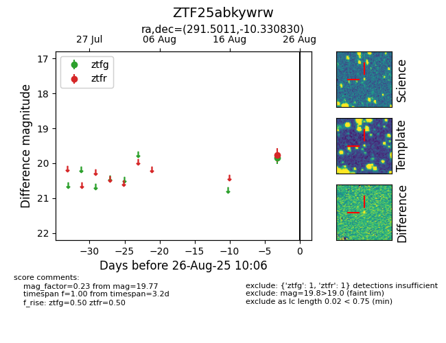

Target ZTF25abkywrw at 2025-08-26 10:06, see:
FINK: fink-portal.org/ZTF25abkywrw
Lasair: lasair-ztf.lsst.ac.uk/objects/ZTF25abkywrw
ALeRCE: alerce.online/object/ZTF25abkywrw
alt names
ZTF25abkywrw (ztf,fink)
coordinates:
equatorial (ra, dec) = (291.5011,-10.33083)
galactic (l, b) = (27.5167,-12.31745)
photometry
last ztfg=19.85, ztfr=19.77
1 ztfg, 1 ztfr detections
